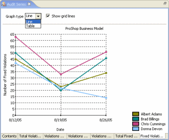

You can either automatically include all of the audit result sets in the same storage location as the audit series or you can provide an explicit list of audit result sets. Unless you have a need to store the results of audits of different code bases in the same project, automatically including the audit result sets is the easiest solution. If you do need to create an audit series for a subset of the available audit result sets, you can do so by selecting "Include only the result sets below" and adding the desired result sets by dragging them to the list from the Audit Explorer view. The first tab also allows you to specify which graphs are included in the report. Each graph type presents a different aspect of the data within the audit result sets. Each graph is displayed and configured on a separate tab. The list pane on the left contains a list of the types of graphs that are currently supported. You can use the "Add" and "Remove" buttons to configure the list of graphs in the report, shown in the right-hand list pane. You can use the buttons to the right of the list of graphs to control the order of the graphs. The same type of graph can be included multiple times in case you want the same data to be configured in different ways. The remaining tabs allow you to configure the individual graphs. Each set of data can typically be displayed in a number of different formats, including both graphical and tabular layouts. Some graph types have additional configuration options, such as whether or not to display grid lines.
 |